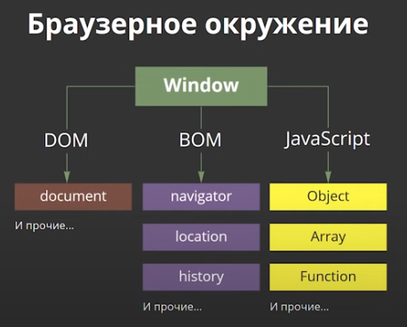

Что такое браузерное окружение?
И вот здесь на схеме в общих чертах показано что доступно js в данном окружении. Во главе всего объект window, который помимо того, что является глобальным объектом, так же представляется собой окно браузера и обладает методами для управления им:
const windowWidth = window.innerWidth;
console.log(Ширина окна браузера: ${windowWidth}px);
Существует гораздо больше методов и свойств для работы с окном браузера, в том числе и прокруткой, но об этом позже, а пока продолжим знакомиться с окружением.После объекта window у нас js со своими сущностями: объекты, массивы, ф и т.д.